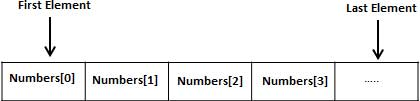

Pascal - Quick Guide
Pascal is a general purpose high level language that was originally developed by Nicklaus Wirth in the early 1970s. It was developed for teaching programming as a systematic discipline and to develop reliable and efficient programs.
Pascal is Algol based language and includes many constructs of Algol. Algol 60 is a subset of Pascal. Pascal offers several data types and programming structures. It is easy to understand and maintain the Pascal programs.
Pascal has grown in popularity in the teaching and academics arena for various reasons:
Easy to learn.
Structured language.
It produces transparent, efficient and reliable programs.
It can be compiled on a variety of computer platforms.
Pascal - Environment Set Up
We will be using Free Pascal in these tutorials. You can download Free Pascal for your operating system from the link: Download Free Pascal
Installing Free Pascal on Linux
The linux distribution of Free Pascal comes in three forms:
a tar.gz version, also available as separate files.
a .rpm (Red Hat Package Manager) version
a .deb (Debian) version.
Installation code for the .rpm version::
rpm -i fpc-X.Y.Z-N.ARCH.rpm
Where X.Y.Z is the version number of the .rpm file, and ARCH is one of the supported architectures (i386, x86_64 etc.).
Installation code for the Debian version(like Ubuntu):
dpkg -i fpc-XXX.deb
Where XXX is the version number of the .deb file.
For details read: Free Pascal Installation Guide
Installing Free Pascal on Mac
If you use Mac OS X, the easiest way to use Free Pascal is to download the Xcode development environment from Apple's web site and follow the simple installation instructions. Once you have Xcode setup, you will be able to use the Free Pascal compiler.
Installing Free Pascal on Windows
For Windows, you will download the Windows installer, setup.exe. This is a usual installation program. You need to take the following steps for installation:
Select a directory.
Select parts of the package you want to install.
Optionally choose to associate the .pp or .pas extensions with the Free Pascal IDE.
For details read: Free Pascal Installation Guide
Pascal Program Structure
A Pascal program basically consists of the following parts:
Program name
Uses command
Type declarations
Constant declarations
Variables declarations
Functions declarations
Procedures declarations
Main program block
Statements and Expressions within each blocks
Comments
Every pascal program generally have a heading statement, a declaration and an execution part strictly in that order. Following format shows the basic syntax for a Pascal program:
program {name of the program}
uses {comma delimited names of libraries you use}
const {global constant declaration block}
var {global variable declaration block}
function {function declarations, if any}
{ local variables }
begin
...
end;
procedure { procedure declarations, if any}
{ local variables }
begin
...
end;
begin { main program block starts}
...
end. { the end of main program block }
Pascal Hello World Example
Following is a simple pascal code that would print the words "Hello, World!":
program HelloWorld;
uses crt;
(* Here the main program block starts *)
begin
writeln('Hello, World!');
readkey;
end.
Compile and Execute Pascal Program:
Open a text editor and add the above mentioned code.
Save the file as hello.pas
Open a command prompt and go to the directory where you saved the file.
Type fpc hello.pas at command prompt and press enter to compile your code.
If there are no errors in your code the command prompt will take you to the next line and would generate hello executable file and hello.o object file.
Now type hello at command prompt to execute your program.
You will be able to see "Hello World" printed on the screen and program waits till you press any key.
$ fpc hello.pas Free Pascal Compiler version 2.6.0 [2011/12/23] for x86_64 Copyright (c) 1993-2011 by Florian Klaempfl and others Target OS: Linux for x86-64 Compiling hello.pas Linking hello 8 lines compiled, 0.1 sec $ ./hello Hello, World!
Pascal - Basic Syntax
You have seen a basic structure of pascal program, so it will be easy to understand other basic building blocks of the pascal programming language.
Variables
A variable definitions are put in a block beginning with a var keyword, followed by definitions of the variables as follows:
var A_Variable, B_Variable ... : Variable_Type;
Pascal variables are declared outside the code-body of the function which means they are not declared within the begin and end pairs, but they are declared after the definition of the procedure/function and before the begin keyword. For global variables, they are defined after the program header.
Functions/Procedures
In pascal a procedure is set of instructions to be executed, with no return value and a function is a procedure with a return value. The definition of function/procedures will be as follows:
Function Func_Name(params...) : Return_Value; Procedure Proc_Name(params...);
Comments
The multiline comments are enclosed within curly brackets and asterisks as {* ... *}. Pascal allows single line comment enclosed within curly brackets { ... }.
{* This is a multi-line comments
and it will span multiple lines. *}
{ This is a single line comment in pascal }
Case Sensitivity
Pascal is a case nonsensitive language which mean you can write your variables, functions and procedure in either case. Like variables A_Variable, a_variable and A_VARIABLE have same meaning in Pascal.
Pascal Statements
Pascal programs are made of statements. Each statement specifies a definite job of the program. These jobs could be declaration, assignment, reading data, writing data, taking logical decisions, transferring program flow control, etc.
For example:
readln (a, b, c); s := (a + b + c)/2.0; area := sqrt(s * (s - a)*(s-b)*(s-c)); writeln(area);
Reserved Words in Pascal
The statements in Pascal are designed with some specific Pascal words, which are called the reserved words. For example, the words, program, input, output, var, real, begin, readline, writeline and end are all reserved words. Following is a list of reserved words available in Pascal.
| and | array | begin | case | const |
| div | do | downto | else | end |
| file | for | function | goto | if |
| in | label | mod | nil | not |
| of | or | packed | procedure | program |
| record | repeat | set | then | to |
| type | until | var | while | with |
Character set and Identifiers in Pascal
The Pascal character set consists of:
All upper case letters (A-Z)
All lower case letters (a-z)
All digits (0-9)
Special symbols - + * / := , . ;. () [] = {} ` white space
The entities in a Pascal program like variables and constants, types, functions, procedures and records etc. has a name or identifier. An identifier is a sequence of letter and digits, beginning with a letter. Special symbols and blanks must not be used in an identifier.
Pascal - Data Types
Pascal Data Types:
Pascal data types can be summarized as below the following diagram:

Type Declarations
The type declaration is used to declare the data type of an identifier. Syntax of type declaration is:
type-identifier-1, type-identfier-2 = type-specifier;
For example, the following declaration defines the variables days and age as integer type, yes and true as Boolean type, name and city as string type, fees and expenses as real type.
type days, age = integer; yes, true = boolean; name, city = string; fees, expenses = real;
Integer Types
Following table gives you detail about standard integer types with its storage sizes and value ranges used in Object Pascal:
| Type | Minimum | Maximum | Format |
|---|---|---|---|
| Integer | -2147483648 | 2147483647 | signed 32-bit |
| Cardinal | 0 | 4294967295 | unsigned 32-bit |
| Shortint | -128 | 127 | signed 8-bit |
| Smallint | -32768 | 32767 | signed 16-bit |
| Longint | -2147483648 | 2147483647 | signed 32-bit |
| Int64 | -2^63 | 2^63 - 1 | signed 64-bit |
| Byte | 0 | 255 | unsigned 8-bit |
| Word | 0 | 65535 | unsigned 16-bit |
| Longword | 0 | 4294967295 | unsigned 32-bit |
Constants
Use of constants makes a program more readable and helps to keep special quantities at one place in the beginning of the program. Pascal allows numerical, logical, string and character constants. Constants can be declared in the declaration part of the program by specifying the const declaration. Syntax of constant type declaration is follows:
const Identifier = contant_value;
Following are some examples of constant declarations:
VELOCITY_LIGHT = 3.0E=10; PIE = 3.141592; NAME = 'Stuart Little'; CHOICE = yes; OPERATOR = '+';
All constant declarations must be given before the variable declaration.
Enumerated types
Enumerated data types are user-defined data types. They allow values to be specified in a list. Only assignment operators and relational operators are permitted on enumerated data type. Enumerated data types can be declared as follows:
type enum-identifier = (item1, item2, item3, ... )
Following are some examples of enumerated type declarations:
type SUMMER = (April, May, June, July, September); COLORS = (Red, Green, Blue, Yellow, Magenta, Cyan, Black, White); TRANSPORT = (Bus, Train, Airplane, Ship);
The order in which the items are listed in the domain of an enumerated type, defines the order of the items. For example, in the enumerated type SUMMER, April comes before May; May comes before June, and so on. The domain of enumerated type identifiers cannot consist of numeric or character constants.
Subrange Types
Subrange types allow a variable to assume values that lie within a certain range. For example, if the age of voters should lie between 18 to 100 years, a variable named age could be declared as:
var age: 18 ... 1000;
We will look at variable declaration in details in the next section. You can also define a subrange type using the type declaration. Syntax for declaring a subrange type is as follows:
type subrange-identifier = lower-limit ... upper-limit;
Following are some examples of subrange type declarations:
const P = 18; Q = 90; type Number = 1 ... 100; Value = P ... Q;
Subrange types can be created from a subset of an already defined enumerated type, For example:
type months = (Jan, Feb, Mar, Apr, May, Jun, Jul, Aug, Sep, Oct, Nov, Dec); Summer = Apr ... Aug; Winter = Oct ... Dec;
Pascal - Variable Types
| Type | Description |
|---|---|
| Character | Typically a single octet (one byte). This is an integer type. |
| Integer | The most natural size of integer for the machine. |
| Real | A single-precision floating point value. |
| Boolean | Specifies true or false logical values. This is also an integer type. |
| Enumerated | Specifies a user-defined list. |
| Subrange | Represents variables whose values lie within a range. |
| String | Stores an array of characters. |
Variable Declaration in Pascal
All variables must be declared before we use them in Pascal program. All variable declarations are followed by the var keyword. A declaration specifies a list of variables, followed by a colon (:) and the type. Syntax of variable declaration is:
var variable_list : type;
Here, type must be a valid Pascal data type including character, integer, real, boolean, or any user defined data type etc., and variable_list may consist of one or more identifier names separated by commas. Some valid variable declarations are shown here:
var age, weekdays : integer; taxrate, net_income: real; choice, isready: boolean; initials, grade: char; name, surname : string;
Enumerated Variables
You have seen howto use simple variable types like integer, real and boolean. Now let's see variables of enumerated type which can be defined as:
var var1, var2, ... : enum-identifier;
When you have declared an enumerated type, you can declare variables of that type. For example,
type months = (January, February, March, April, May, June, July, August, September, October, November, December); Var m: months; ... M := January;
Subrange Variables
Subrange variables are declared as:
var subrange-name : lowerlim ... uperlim;
Examples of subrange variables are:
var marks: 1 ... 100; grade: 'A' ... 'E'; age: 1 ... 25;
Pascal - Constants
A constant is an entity that remains unchanged during program execution. Pascal allows only constants of the following types to be declared:
Ordinal types
Set types
Pointer types (but the only allowed value is Nil).
Real types
Char
String
Declaring Constants
Syntax for declaring constants is as follows:
const identifier = constant_value;
The following table provides examples of some valid constant declarations:
| Constant Type | Examples |
|---|---|
| Ordinal(Integer)type constant | valid_age = 21; |
| Set type constant | Vowels = set of (A,E,I,O,U); |
| Pointer type constant | P = NIL; |
| Real type constant | e = 2.7182818; velocity_light = 3.0E+10; |
| Character type constant | Operator = '+'; |
| String type constant | president = 'Johnny Depp'; |
Pascal - Operators
Arithmetic Operators
| Operator | Description | Example |
|---|---|---|
| + | Adds two operands | A + B will give 30 |
| - | Subtracts second operand from the first | A - B will give -10 |
| * | Multiply both operands | A * B will give 200 |
| div | Divide numerator by de-numerator | B div A will give 2 |
| mod | Modulus Operator and remainder of after an integer division | B mod A will give 0 |
Relational Operators
| Operator | Description | Example |
|---|---|---|
| = | Checks if the value of two operands is equal or not, if yes then condition becomes true. | (A = B) is not true. |
| <> | Checks if the value of two operands is equal or not, if values are not equal then condition becomes true. | (A <> B) is true. |
| > | Checks if the value of left operand is greater than the value of right operand, if yes then condition becomes true. | (A > B) is not true. |
| < | Checks if the value of left operand is less than the value of right operand, if yes then condition becomes true. | (A < B) is true. |
| >= | Checks if the value of left operand is greater than or equal to the value of right operand, if yes then condition becomes true. | (A >= B) is not true. |
| <= | Checks if the value of left operand is less than or equal to the value of right operand, if yes then condition becomes true. | (A <= B) is true. |
Boolean Operators
| Operator | Description | Example |
|---|---|---|
| and | Called Boolean AND operator. If both the operands are true then condition becomes true. | (A and B) is false. |
| and then | It is similar to the AND operator, however, it guarantees the order in which the compiler evaluates the logical expression. Left to right and the right operands are evaluated only when necessary | (A and then B) is false. |
| or | Called Boolean OR Operator. If any of the two operands is true then condition becomes true. | (A or B) is true. |
| or else | It is similar to Boolean OR, however, it guarantees the order in which the compiler evaluates the logical expression. Left to right and the right operands are evaluated only when necessary | (A or else B) is true. |
| not | Called Boolean NOT Operator. Used to reverse the logical state of its operand. If a condition is true then Logical NOT operator will make it false. | not (A and B) is true. |
Bit Operators
| Operator | Description | Example |
|---|---|---|
| & | Binary AND Operator copies a bit to the result if it exists in both operands. | (A & B) will give 12 which is 0000 1100 |
| | | Binary OR Operator copies a bit if it exists in either operand. | (A | B) will give 61 which is 0011 1101 |
| ! | Binary OR Operator copies a bit if it exists in either operand. | A ! B) will give 61 which is 0011 1101 |
| ~ | Binary Ones Complement Operator is unary and has the effect of 'flipping' bits. | (~A ) will give -60 which is 1100 0011 |
| << | Binary Left Shift Operator. The left operands value is moved left by the number of bits specified by the right operand. | A << 2 will give 240 which is 1111 0000 |
| >> | Binary Right Shift Operator. The left operands value is moved right by the number of bits specified by the right operand. | A >> 2 will give 15 which is 0000 1111 |
Please note that different implementations of Pascal differ in bitwise operators. Free Pascal, the compiler we used here, however, supports the following bitwise operators:
| Operators | Operations |
|---|---|
| not | Bitwise NOT |
| and | Bitwise AND |
| or | Bitwise OR |
| xor | Bitwise exclusive OR |
| shl | Bitwise shift left |
| shr | Bitwise shift right |
| << | Bitwise shift left |
| >> | Bitwise shift right |
Operators Precedence in Pascal
| Operator | Precedence |
|---|---|
| ~, not, | Highest |
| *, /, div, mod, and, & | |
| |, !, +, -, or, | |
| =, <>, <, <=, >, >=, in | |
| or else, and then | Lowest |
Pascal - Decision Making
Following is the general from of a typical decision making structure found in most of the programming languages:

if-then Statement
The if-then statement is the simplest form of control statement, frequently used in decision making and changing the control flow of the program execution.
Syntax:
Syntax for if-then statement is:
if condition then S
Where condition is a Boolean or relational condition and S is a simple or compound statement. Example of an if-then statement is:
if (a <= 20) then c:= c+1;
If the boolean expression condition evaluates to true then the block of code inside the if statement will be executed. If boolean expression evaluates to false then the first set of code after the end of the if statement (after the closing end;) will be executed.
Pascal assumes any non-zero and non-nill values as true and if it is either zero or nill then it is assumed as false value.
Flow Diagram:

if-then-else Statement
An if-then statement can be followed by an optional else statement, which executes when the Boolean expression is false.
Syntax:
Syntax for the if-then-else statement is:
if condition then S1 else S2;
Where, S1 and S2 are different statements. Please note that the statement S1 is not followed by a semicolon. In the if-then-else statements, when the test condition is true, the statement S1 is executed and S2 is skipped; when the test condition is false, then S1 is bypassed and statement S2 is executed.
For example,
if color = red then
writeln('You have chosen a red car')
else
writeln('Please choose a color for your car');
If the boolean expression condition evaluates to true then the if-then block of code will be executed otherwise the else block of code will be executed.
Pascal assumes any non-zero and non-nill values as true and if it is either zero or nill then it is assumed as false value.
Flow Diagram:

Case Statement
You have observed that if-then-else statements enable us to implement multiple decisions in a program. This can also be achieved using the case statement in simpler way.
Syntax:
The syntax of the case statement is:
case (expression) of L1 : S1; L2: S2; ... ... Ln: Sn; end;
Where, L1, L2... are case labels, or input values which could be integers, characters, boolean or enumerated data items. S1, S2, ... are Pascal statements, each of these statements may have one or more than one case label associated with it. The expression is called the case selector or the case index. The case index may assume values that correspond to the case labels.
The case statement must always have an end statement associated with it.
The following rules apply to a case statement:
The expression used in a case statement must have an integral or enumerated type, or be of a class type in which the class has a single conversion function to an integral or enumerated type.
You can have any number of case statements within a case. Each case is followed by the value to be compared to and a colon.
The case label for a case must be the same data type as the expression in the case statement, and it must be a constant or a literal.
The compiler will evaluate the case expression. If one of the case label's value matches the value of the expression, the statement that follows this label is executed. After that, the program continues after the final end.
If none of the case label matches the expression value, the statement list after the else or otherwise keyword is executed. This can be an empty statement list. If no else part is present, and no case constant matches the expression value, program flow continues after the final end.
The case statements can be compound statements (i.e. a Begin ... End block).
Flow Diagram:

Pascal - Loops
A loop statement allows us to execute a statement or group of statements multiple times and following is the general from of a loop statement in most of the programming languages:

While-do Loops
A while-do loop statement in Pascal allows repetitive computations till some test condition is satisfied. In other words it repeatedly executes a target statement as long as a given condition is true.
Syntax:
The syntax of a while-do loop is:
while (condition) do S;
Where condition is a Boolean or relational expression whose value would be true or false and S is a simple statement or group of statements within BEGIN ... END block.
For example,
while number>0 do begin sum := sum + number; number := number - 2; end;
When the condition becomes false, program control passes to the line immediately following the loop.
Flow Diagram:

For-do Loop
A for-do loop is a repetition control structure that allows you to efficiently write a loop that needs to execute a specific number of times.
Syntax:
The syntax for the for-do loop in Pascal is as follows:
for < variable-name > := < initial_value > to [down to] < final_value > do S;
Where, the variable-name specifies a variable of ordinal type, called control variable or index variable; initial_value and final_value values are values that the control variable can take; and S is the body of the for-do loop that could be a simple statement or a group of statements.
For example,
for i:= 1 to 10 do writeln(i);
Here is the flow of control in a for-do loop:
The initial step is executed first, and only once. This step allows you to declare and initialize any loop control variables.
Next, the condition is evaluated. If it is true, the body of the loop is executed. If it is false, the body of the loop does not execute and flow of control jumps to the next statement just after the for-do loop.
After the body of the for-do loop executes, the value of the variable in increased or decreased.
The condition is now evaluated again. If it is true, the loop executes and the process repeats itself (body of loop, then increment step, and then again condition). After the condition becomes false, the for-do loop terminates.
Flow Diagram

Repeat-Until Loop
Unlike for and while loops, which test the loop condition at the top of the loop, the repeat ... until loop in Pascal checks its condition at the bottom of the loop.
A repeat ... until loop is similar to a while loop, except that a repeat ... until loop is guaranteed to execute at least one time.
Syntax:
repeat S1; S2; ... ... Sn; until condition;
For example,
repeat sum := sum + number; number := number - 2; until number = 0;
Notice that the conditional expression appears at the end of the loop, so the statement(s) in the loop execute once before the condition is tested.
If the condition is true, the flow of control jumps back up to repeat, and the statement(s) in the loop execute again. This process repeats until the given condition becomes false.
Flow Diagram:

Break Statement
The break statement in Pascal has the following two usages:
When the break statement is encountered inside a loop, the loop is immediately terminated and program control resumes at the next statement following the loop.
It can be used to terminate a case in the case statement (covered in the next chapter).
If you are using nested loops ( ie. one loop inside another loop), the break statement will stop the execution of the innermost loop and start executing the next line of code after the block.
Syntax:
The syntax for a break statement in Pascal is as follows:
break;
Flow Diagram:

Continue Statement
The continue statement in Pascal works somewhat like the break statement. Instead of forcing termination, however, continue forces the next iteration of the loop to take place, skipping any code in between.
For the for-do loop, continue statement causes the conditional test and increment portions of the loop to execute. For the while-do and repeat...until loops, continue statement causes the program control passes to the conditional tests.
Syntax:
The syntax for a continue statement in Pascal is as follows:
continue;
Flow Diagram:

Pascal - Functions
Subprograms
A subprogram is a program unit/module that performs a particular task. These subprograms are combined to form larger programs. This is basically called the 'Modular design'. A subprogram can be invoked by a subprogram/program, which is called the calling program.
Pascal provides two kinds of subprograms:
Functions: these subprograms return a single value.
Procedures: these subprograms do not return a value directly.
Defining a Function:
In Pascal, a function is defined using the function keyword. The general form of a function definition is as follows:
function name(argument(s): type1; argument(s): type2; ...): function_type; local declarations; begin ... < statements > ... name:= expression; end;
A function definition in Pascal consists of a function header, local declarations and a function body. The function header consists of the keyword function and a name given to the function. Here are all the parts of a function:
Arguments: The argument(s) establish the linkage between the calling program and the function identifiers and also called the formal parameters. A parameter is like a placeholder. When a function is invoked, you pass a value to the parameter. This value is referred to as actual parameter or argument. The parameter list refers to the type, order, and number of the parameters of a function. Use of such formal parameters is optional. These parameters may have standard data type, user-defined datatype or subrange data type.
The formal parameters list appearing in the function statement could be simple or subscripted variables, arrays or structured variables, or subprograms.
Return Type: All functions must return a value, so all functions must be assigned a type. The function-type is the data type of the value the function returns. It may be standard, user-defined scalar or subrange type but it cannot be structured type.
Local declarations: local declarations refer to the declarations for labels, constants, variables, functions and procedures, which are application to the body of function only.
Function Body: The function body contains a collection of statements that define what the function does. It should always be enclosed between the reserved words begin and end. It is the part of a function where all computations are done. There must be an assignment statement of the type - name := expression; in the function body that assigns a value to the function name. This value is returned as and when the function is executed. The last statement in the body must be an end statement.
Calling a Function:
To call a function you simply need to pass the required parameters along with function name and if function returns a value then you can store returned value. Following is a simple example to show the usage:
program exFunction;
var
a, b, ret : integer;
(*function definition *)
function max(num1, num2: integer): integer;
var
(* local variable declaration *)
result: integer;
begin
if (num1 > num2) then
result := num1
else
result := num2;
max := result;
end;
begin
a := 100;
b := 200;
(* calling a function to get max value *)
ret := max(a, b);
writeln( 'Max value is : ', ret );
end.
When the above code is compiled and executed, it produces following result:
Max value is : 200
Pascal - Procedures
Procedures are subprograms that, instead of returning a single value, allow to obtain a group of results.
Defining a Procedure:
In Pascal, a procedure is defined using the procedure keyword. The general form of a procedure definition is as follows:
procedure name(argument(s): type1, argument(s): type 2, ... ); < local declarations > begin < procedure body > end;
A procedure definition in Pascal consists of a header , local declarations and a body of the procedure. The procedure header consists of the keyword procedure and a name given to the procedure. Here are all the parts of a procedure:
Arguments: The argument(s) establish the linkage between the calling program and the procedure identifiers and also called the formal parameters. Rules for arguments in procedures are same as that for the functions.
Local declarations: local declarations refer to the declarations for labels, constants, variables, functions and procedures, which are application to the body of the procedure only.
Procedure Body: The procedure body contains a collection of statements that define what the procdure does. It should always be enclosed between the reserved words begin and end. It is the part of a procedure where all computations are done.
Procedure Declarations:
A procedure declaration tells the compiler about a procedure name and how to call the procedure. The actual body of the procedure can be defined separately.
A procedure declaration has the following syntax:
procedure name(argument(s): type1, argument(s): type 2, ... );
Please note that the name of the procedure is not associated with any type. For the above defined procedure findMin(), following is the declaration:
procedure findMin(x, y, z: integer; var m: integer);
Calling a Procedure:
To call a procedure you simply need to pass the required parameters along with the procedure name as shown below:
program exProcedure;
var
a, b, c, min: integer;
procedure findMin(x, y, z: integer; var m: integer);
(* Finds the minimum of the 3 values *)
begin
if x < y then
m:= x
else
m:= y;
if z < m then
m:= z;
end; { end of procedure findMin }
begin
writeln(' Enter three numbers: ');
readln( a, b, c);
findMin(a, b, c, min); (* Procedure call *)
writeln(' Minimum: ', min);
end.
When the above code is compiled and executed, it produces following result:
Enter three numbers: 89 45 67 Minimum: 45
Pascal - Variable Scope
A scope in any programming is a region of the program where a defined variable can have its existence and beyond that variable cannot be accessed. There are three places where variables can be declared in Pascal programming language:
Inside a subprogram or a block which is called local variables
Outside of all subprograms which is called global variables
In the definition of subprogram parameters which is called formal parameters
Let us explain what are local and global variables and formal parameters.
Local Variables
Variables that are declared inside a subprogram or block are called local variables. They can be used only by statements that are inside that subprogram or block of code. Local variables are not known to subprograms outside their own. Following is the example using local variables. Here all the variables a, b and c are local to program named exLocal.
program exLocal;
var
a, b, c: integer;
begin
(* actual initialization *)
a := 10;
b := 20;
c := a + b;
writeln('value of a = ', a , ' b = ', b, ' and c = ', c);
end.
When the above code is compiled and executed, it produces following result:
value of a = 10 b = 20 c = 30
Global Variables
Global variables are defined outside of a function, usually on top of the program. The global variables will hold their value throughout the lifetime of your program and they can be accessed inside any of the functions defined for the program.
A global variable can be accessed by any function. That is, a global variable is available for use throughout your entire program after its declaration. Following is an example using global and local variables:
program exGlobal;
var
a, b, c: integer;
procedure display;
var
x, y, z: integer;
begin
(* local variables *)
x := 10;
y := 20;
z := x + y;
(*global variables *)
a := 30;
b:= 40;
c:= a + b;
writeln('Winthin the procedure display');
writeln(' Displaying the global variables a, b, and c');
writeln('value of a = ', a , ' b = ', b, ' and c = ', c);
writeln('Displaying the local variables x, y, and z');
writeln('value of x = ', x , ' y = ', y, ' and z = ', z);
end;
begin
a:= 100;
b:= 200;
c:= 300;
writeln('Winthin the program exlocal');
writeln('value of a = ', a , ' b = ', b, ' and c = ', c);
display();
end.
When the above code is compiled and executed, it produces following result:
Within the program exlocal value of a = 100 b = 200 c = 300 Within the procedure display Displaying the global variables a, b, and c value of a = 30 b = 40 c = 70 Displaying the local variables x, y, and z value of x = 10 y = 20 z = 30
Pascal - Strings
The string in Pascal is actually a sequence of characters with an optional size specification. The characters could be numeric, letters, blank, special characters or a combination of all. Extended Pascal provides numerous types of string objects depending upon the system and implementation. We will discuss more commonly types of strings used in programs.
You can define a string in many ways:
Character arrays: This is a character string (or string for short) is a sequence of zero or more byte-sized characters enclosed in single quotes.
String variables: The variable of String type, as defined in Turbo Pascal.
Short strings: The variable of String type with size specification.
Null terminated strings: The variable of pchar type.
AnsiStrings: Ansistrings are strings that have no length limit.
Pascal provides only one string operator . string concatenation operator (+).
Examples
The following program prints first four kinds of strings. We will use AnsiStrings in the next example.
program exString;
var
greetings: string;
name: packed array [1..10] of char;
organisation: string[10];
message: pchar;
begin
greetings := 'Hello ';
message := 'Good Day!';
writeln('Please Enter your Name');
readln(name);
writeln('Please Enter the name of your Organisation');
readln(organisation);
writeln(greetings, name, ' from ', organisation);
writeln(message);
end.
When the above code is compiled and executed, it produces following result:
Please Enter your Name John Smith Please Enter the name of your Organisation Infotech Hello John Smith from Infotech
Pascal - Boolean
Pascal provides data types Boolean that enables the programmers to define, store and manipulate logical entities, such as constants, variables, functions and expressions etc.
Boolean values are basically integer type. Boolean type variables have two pre-defined possible values True and False. The expressions resolving to a Boolean value can also be assigned to a Boolean type.
Free Pascal also supports the ByteBool, WordBool and LongBool types. These are of type Byte, Word or Longint respectively.
The value False is equivalent to 0 (zero) and any nonzero value is considered True when converting to a Boolean value. A Boolean value of True is converted to -1 in case it is assigned to a variable of type LongBool.
It shuold be noted that logical operators and, or and not are defined for Boolean data types.
Declaration of Boolean Data Types
A variable of Boolean type is declared using the var keyword.
var boolean-identifier: boolean;
for example,
var choice: boolean;
Pascal - Arrays
Pascal programming language provides a data structure called the array, which can store a fixed-size sequential collection of elements of the same type. An array is used to store a collection of data, but it is often more useful to think of an array as a collection of variables of the same type.
Instead of declaring individual variables, such as number1, number2, ..., and number100, you declare one array variable such as numbers and use numbers[1], numbers[2], and ..., numbers[100] to represent individual variables. A specific element in an array is accessed by an index.
All arrays consist of contiguous memory locations. The lowest address corresponds to the first element and the highest address to the last element.
Please note that if you want a C style array starting from index 0, you just need to start the index from 0, instead of 1.
Declaring Arrays
To declare an array in Pascal, a programmer may either declare the type and then create variables of that array or directly declare the array variable.
The general form of type declaration of one dimensional array is:
type array-identifier = array[index-type] of element-type;
Where,
array-identifier indicates the name of the array type.
index-type specifies the subscript of the array; it can be any scalar data type except real
element-type specifies the types of values that are going to be stored
For example,
type vector = array [ 1..25] of real; var velocity: vector;
Now velocity is a variable array of vector type, which is sufficient to hold up to 25 real numbers.
To start the array from 0 index, the declaration would be:
type vector = array [ 0..24] of real; var velocity: vector;
Types of Array Subscript
In Pascal, an array subscript could be of any scalar type like, integer, Boolean, enumerated or subrange, except real. Array subscripts could have negative values too.
For example,
type temperature = array [-10 .. 50] of real; var day_temp, night_temp: temperature;
Let us take up another example where the subscript is of character type:
type ch_array = array[char] of 1..26; var alphabet: ch_array;
Subscript could be of enumerated type:
type color = ( red, black, blue, silver, beige); car_color = array of [color] of boolean; var car_body: car_color;
Initializing Arrays
In Pascal, arrays are initialized through assignment, either by specifying a particular subscript or using a for-do loop.
For example:
type ch_array = array[char] of 1..26; var alphabet: ch_array; c: char; begin ... for c:= 'A' to 'Z' do alphabet[c] := ord[m]; (* the ord() function returns the ordinal values *)
Accessing Array Elements
An element is accessed by indexing the array name. This is done by placing the index of the element within square brackets after the name of the array. For example:
a: integer; a: = alphabet['A'];
Pascal - Pointers
Pointers in Pascal are easy and fun to learn. Some Pascal programming tasks are performed more easily with pointers, and other tasks, such as dynamic memory allocation, cannot be performed without using pointers. So it becomes necessary to learn pointers to become a perfect Pascal programmer. Let's start learning them in simple and easy steps.
As you know every variable is a memory location and every memory location has its address defined which can be accessed using the name of the pointer variable, which denotes an address in memory.
What Are Pointers?
A pointer is a dynamic variable whose value is the address of another variable i.e. direct address of the memory location. Like any variable or constant, you must declare a pointer before you can use it to store any variable address. The general form of a pointer variable declaration is:
type ptr-identifier = ^base-variable-type;
The pointer type is defined by prefixing the up-arrow of caret symbol (^) with the base type. The base-type defines the types of the data items. Once a pointer variable is defined to be of certain type, it can point data items of that type only. Once a pointer type has been defined, we can use the var declaration to declare pointer variables.
var p1, p2, ... : ptr-identifier;
Following are some valid pointer declarations:
type
Rptr = ^real;
Cptr = ^char;
Bptr = ^ Boolean;
Aptr = ^array[1..5] of real;
date-ptr = ^ date;
Date = record
Day: 1..31;
Month: 1..12;
Year: 1900..3000;
End;
var
a, b : Rptr;
d: date-ptr;
The pointer variables are dereferenced by using the same caret symbol(^). For example, the associated variable referred by a pointer rptr, is rptr^. It can be accessed as:
rptr^ := 234.56;
Pascal - Records
Pascal arrays allow you to define type of variables that can hold several data items of the same kind but a record is another user defined data type available in Pascal, which allows you to combine data items of different kinds.
Records consist of different fields. Suppose you want to keep track of your books in a library. You might want to track the following attributes about each book:
Title
Author
Subject
Book ID
Defining a Record
To define a record type, you may use the type declaration statement. The record type is defined as:
type record-name = record field-1: field-type1; field-2: field-type2; ... field-n: field-typen; end;
Here is the way you would declare the Book record:
type Books = record title: packed array [1..50] of char; author: packed array [1..50] of char; subject: packed array [1..100] of char; book_id: integer; end;
The record variables are defined in the usual way as
var r1, r2, ... : record-name;
Accessing Fields of a Record
To access any field of a record, we use the member access operator (.). The member access operator is coded as a period between the record variable name and the field that we wish to access. Following is the example to explain usage of structure:
program exRecords;
type
Books = record
title: packed array [1..50] of char;
author: packed array [1..50] of char;
subject: packed array [1..100] of char;
book_id: longint;
end;
var
Book1, Book2: Books; (* Declare Book1 and Book2 of type Books *)
begin
(* book 1 specification *)
Book1.title := 'C Programming';
Book1.author := 'Nuha Ali ';
Book1.subject := 'C Programming Tutorial';
Book1.book_id := 6495407;
(* book 2 specification *)
Book2.title := 'Telecom Billing';
Book2.author := 'Zara Ali';
Book2.subject := 'Telecom Billing Tutorial';
Book2.book_id := 6495700;
(* print Book1 info *)
writeln ('Book 1 title : ', Book1.title);
writeln('Book 1 author : ', Book1.author);
writeln( 'Book 1 subject : ', Book1.subject);
writeln( 'Book 1 book_id : ', Book1.book_id);
writeln;
(* print Book2 info *)
writeln ('Book 2 title : ', Book2.title);
writeln('Book 2 author : ', Book2.author);
writeln( 'Book 2 subject : ', Book2.subject);
writeln( 'Book 2 book_id : ', Book2.book_id);
end.
When the above code is compiled and executed, it produces following result:
Book 1 title : C Programming Book 1 author : Nuha Ali Book 1 subject : C Programming Tutorial Book 1 book_id : 6495407 Book 2 title : Telecom Billing Book 2 author : Zara Ali Book 2 subject : Telecom Billing Tutorial Book 2 book_id : 6495700
Pascal - Variants
Pascal supports a unique type of storage named variants. You can assign any simple type of values in a variant variable. The type of a value stored in a variant is only determined at runtime. Almost any simple type can be assigned to variants: ordinal types, string types, int64 types.
Structured types such as sets, records, arrays, files, objects and classes are not assignment-compatible with a variant. You can also assign a pointer to a variant.
Free Pascal supports variants.
Declaring a Variant
You can declare variant type like any other types using the var keyword. The syntax for declaring a variant type is:
var v: variant;
Now this variant variable v can be assigned to almost all simple types including the enumerated types and vice versa.
type color = (red, black, white); var v : variant; i : integer; b : byte; w : word; q : int64; e : extended; d : double; en : color; as : ansistring; ws : widestring; begin v := i; v := b; v := w; v := q; v := e; v := en; v := d: v := as; v := ws; end;
Pascal - Sets
A set is a collection of elements of same type. Pascal allows defining the set data type. The elements in a set are called its members. In mathematics, sets are represented by enclosing the members within braces{}. However, in Pascal, set elements are enclosed within square brackets [], which are referred as set constructor.
Defining Set Types and Variables
Pascal Set types are defined as
type set-identifier = set of base type;
Variables of set type are defined as
var s1, s2, ...: set-identifier;
or,
s1, s2...: set of base type;
Examples of some valid set type declaration are:
type Days = (mon, tue, wed, thu, fri, sat, sun); Letters = set of char; DaySet = set of days; Alphabets = set of 'A' .. 'Z'; studentAge = set of 13..20;
Set Operators
Following table shows all the set operators supported by Free Pascal. Assume that S1 and S2 are two character sets, such that:
S1 := ['a', 'b', 'c'];
S2 := ['c', 'd', 'e'];
| Operator | Description | Example |
|---|---|---|
| + | Union of two sets | S1 + S2 will give a set ['a', 'b', 'c', 'd', 'e'] |
| - | Difference of two sets | S1 - S2 will give a set ['a', 'b'] |
| * | Intersection of two sets | S1 * S2 will give a set ['c'] |
| >< | Symmetric difference of two sets | S1 >< S2 will give a set ['a', 'b', 'd', 'e'] |
| = | Checks equality of two sets | S1 = S2 will give the boolean value False |
| <> | Checks non-equality of two sets | S1 <> S2 will give the boolean value True |
| <= | Contains( Checks if one set is a subset of the other) | S1 <= S2 will give the boolean value False |
| Include | Includes an element in the set; basically it is the Union of a set and an element of same base type | Include (S1, ['d']) will give a set ['a', 'b', 'c', 'd'] |
| Exclude | Excludes an element from a set; basically it is the Difference of a set and an element of same base type | Exclude (S2, ['d']) will give a set ['c', 'e'] |
| In | Checks set membership of an element in a set | ['e'] in S2 gives the boolean value True |
Pascal - File Handling
Pascal treats a file as a sequence of components which must be of uniform type. A file's type is determined by the type of the components. File data type is defined as:
type file-name = file of base-type;
Where, the base-type indicates the type of the components of the file. The base type could be anything like, integer, real, Boolean, enumerated, subrange, record, arrays and sets except another file type. Variables of a file type are created using the var declaration:
var f1, f2,...: file-name;
Following are some examples of defining some file types and file variables:
type rfile = file of real; ifile = file of integer; bfile = file of boolean; datafile = file of record arrfile = file of array[1..4] of integer; var marks: arrfile; studentdata: datafile; rainfalldata: rfile; tempdata: ifile; choices: bfile;
Creating and Writing to a File
Let us write a program that would create a data file for students' records. It would create a file named students.dat and write a student's data into it:
program DataFiles;
type
StudentRecord = Record
s_name: String;
s_addr: String;
s_batchcode: String;
end;
var
Student: StudentRecord;
f: file of StudentRecord;
begin
Assign(f,'students.dat');
Rewrite(f);
Student.s_name := 'John Smith';
Student.s_addr := 'United States of America';
Student.s_batchcode := 'Computer Science';
Write(f,Student);
Close(f);
end.
When compiled and run, the program would create a file named students.dat into the working directory. You can open the file using a text editor, like notepad, to look at John Smith's data.
Reading from a File
We have just created and written into a file named students.dat. Now let us write a program that would read the student's data from the file:
program DataFiles;
type
StudentRecord = Record
s_name: String;
s_addr: String;
s_batchcode: String;
end;
var
Student: StudentRecord;
f: file of StudentRecord;
begin
assign(f, 'students.dat');
reset(f);
while not eof(f) do
begin
read(f,Student);
writeln('Name: ',Student.s_name);
writeln('Address: ',Student.s_addr);
writeln('Batch Code: ', Student.s_batchcode);
end;
close(f);
end.
When the above code is compiled and executed, it produces following result:
Name: John Smith Address: United States of America Batch Code: Computer Science
Pascal - Memory Management
This chapter explains dynamic memory management in Pascal. Pascal programming language provides several functions for memory allocation and management.
Allocating Memory Dynamically
While doing programming, if you are aware about the size of an array, then it is easy and you can define it as an array. For example to store a name of any person, it can go max 100 characters so you can define something as follows:
var name: array[1..100] of char;
But now let us consider a situation where you have no idea about the length of the text you need to store, for example you want to store a detailed description about a topic. Here we need to define a pointer to string without defining how much memory is required.
Pascal provides a procedure newto create pointer variables.
program exMemory;
var
name: array[1..100] of char;
description: ^string;
begin
name:= 'Zara Ali';
new(description);
if not assigned(description) then
writeln(' Error - unable to allocate required memory')
else
description^ := 'Zara ali a DPS student in class 10th';
writeln('Name = ', name );
writeln('Description: ', description^ );
end.
When the above code is compiled and executed, it produces following result:
Name = Zara Ali Description: Zara ali a DPS student in class 10th
Now, if you need to define a pointer with specific number of bytes to be referred by it later, you should use the getmem function or the getmem procedure, which has the following syntax:
procedure Getmem( out p: pointer; Size: PtrUInt ); function GetMem( size: PtrUInt ):pointer;
In the previous example, we declared a pointer to a string. A string has a maximum value of 255 bytes. If you really don't need that much space, or a larger space, in terms of bytes, getmem subprogram allows specifying that. Let us rewrite the previous example, using getmem:
program exMemory;
var
name: array[1..100] of char;
description: ^string;
begin
name:= 'Zara Ali';
description := getmem(200);
if not assigned(description) then
writeln(' Error - unable to allocate required memory')
else
description^ := 'Zara ali a DPS student in class 10th';
writeln('Name = ', name );
writeln('Description: ', description^ );
freemem(description);
end.
When the above code is compiled and executed, it produces following result:
Name = Zara Ali Description: Zara ali a DPS student in class 10th
Pascal - Units
A Pascal program can consist of modules called units. A unit might consist of some code blocks which in turn are made up of variables and type declarations, statements, procedures etc. There are many built-in units in Pascal and Pascal allows programmers to define and write their own units to be used later in various programs.
Using Built-in Units
Both the built-in units and user defined units are included in a program by the uses clause. We have already used the variants unit in the Pascal - Variants tutorial. This tutorial explains creating and including user-defined units. However, let us first see how to include a built-in unit crt in your program:
program myprog; uses crt;
The following example illustrates using the crt unit:
Program Calculate_Area (input, output);
uses crt;
var
a, b, c, s, area: real;
begin
textbackground(white); (* gives a white background *)
clrscr; (*clears the screen *)
textcolor(green); (* text color is green *)
gotoxy(30, 4); (* takes the pointer to the 4th line and 30th column)
writeln('This program calculates area of a triangle:');
writeln('Area = area = sqrt(s(s-a)(s-b)(s-c))');
writeln('S stands for semi-perimeter');
writeln('a, b, c are sides of the triangle');
writeln('Press any key when you are ready');
readkey;
clrscr;
gotoxy(20,3);
write('Enter a: ');
readln(a);
gotoxy(20,5);
write('Enter b:');
readln(b);
gotoxy(20, 7);
write('Enter c: ');
readln(c);
s := (a + b + c)/2.0;
area := sqrt(s * (s - a)*(s-b)*(s-c));
gotoxy(20, 9);
writeln('Area: ',area:10:3);
readkey;
end.
It is the same program we used right at the beginning of the Pascal tutorial, compile and run it to find the effects of the change.
Creating and Using a Pascal Unit
To create a unit, you need to write the modules, or subprograms you want to store in it and save it in a file with .pas extension. The first line of this file should start with the keyword unit followed by the name of the unit. For example:
unit calculateArea;
Following are three important steps in creating a Pascal unit:
The name of the file and the name of the unit should be exactly same. So our unit calculateArea will be saved in a file named calculateArea.pas
The next line should consist of a single keyword interface. After this line, you will write the declarations for all the functions and procedures that will come in this unit.
Right after the function declarations, write the word implementation, which is again a keyword. After the line containing the keyword implementation, provide definition of all the subprograms.
The following program creates the unit named calculateArea:
unit CalculateArea; interface function RectangleArea( length, width: real): real; function CircleArea(radius: real) : real; function TriangleArea( side1, side2, side3: real): real; implementation function RectangleArea( length, width: real): real; begin RectangleArea := length * width; end; function CircleArea(radius: real) : real; const PI = 3.14159; begin CircleArea := PI * radius * radius; end; function TriangleArea( side1, side2, side3: real): real; var s, area: real; begin s := (side1 + side2 + side3)/2.0; area := sqrt(s * (s - side1)*(s-side2)*(s-side3)); TriangleArea := area; end; end.
Next, let us write a simple program that would use the unit we defined above:
program AreaCalculation;
uses CalculateArea,crt;
var
l, w, r, a, b, c, area: real;
begin
clrscr;
l := 5.4;
w := 4.7;
area := RectangleArea(l, w);
writeln('Area of Rectangle 5.4 x 4.7 is: ', area:7:3);
r:= 7.0;
area:= CircleArea(r);
writeln('Area of Circle with radius 7.0 is: ', area:7:3);
a := 3.0;
b:= 4.0;
c:= 5.0;
area:= TriangleArea(a, b, c);
writeln('Area of Triangle 3.0 by 4.0 by 5.0 is: ', area:7:3);
end.
When the above code is compiled and executed, it produces following result:
Area of Rectangle 5.4 x 4.7 is: 25.380 Area of Circle with radius 7.0 is: 153.938 Area of Triangle 3.0 by 4.0 by 5.0 is: 6.000
Pascal - Date & Time
Most of the software you write needs implementing some form of date functions returning current date and time. Dates are so much part of everyday life that it becomes easy to work with them without thinking. Pascal also provides powerful tools for date arithmetic that makes manipulating dates easy. However, the actual name and workings of these functions are different for different compilers.
Getting the Current Date & Time:
Pascal's TimeToString function gives you the current time in a colon(: ) delimited form. The following example shows how to get the current time:
program TimeDemo;
uses sysutils;
begin
writeln ('Current time : ',TimeToStr(Time));
end.
When the above code was compiled and executed, it produced following result:
Current time : 18:33:08
The Date function returns the current date in TDateTime format. The TDateTime is a double value, which needs some decoding and formatting. The following program demonstrates how to use it in your program to display the current date:
Program DateDemo;
uses sysutils;
var
YY,MM,DD : Word;
begin
writeln ('Date : ',Date);
DeCodeDate (Date,YY,MM,DD);
writeln (format ('Today is (DD/MM/YY): %d/%d/%d ',[dd,mm,yy]));
end.
When the above code was compiled and executed, it produced following result:
Date: 4.111300000000000E+004 Today is (DD/MM/YY):23/7/2012
The Now function returns the current date and time:
Program DatenTimeDemo;
uses sysutils;
begin
writeln ('Date and Time at the time of writing : ',DateTimeToStr(Now));
end.
When the above code was compiled and executed, it produced following result:
Date and Time at the time of writing : 23/7/2012 18:51:
Free Pascal provides a simple time stamp structure named TTimeStamp, which has the following format:
type TTimeStamp = record Time: Integer; Date: Integer; end;